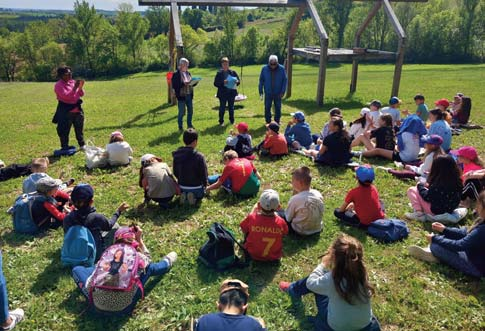
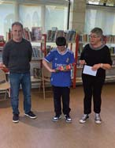

13 À Montpezat-de-Quercy, l’école élémentaire mise sur la lecture, les mathématiques et les partenariats pour faire réussir ses élèves. Le projet d’école se décline cette année autour d’un ob- jectif clair : améliorer les résultats scolaires des élèves, en particulier en lecture, en compréhension de la langue et en mathématiques, tout en renforçant les liens avec les partenaires locaux. Une ambition éduca- tive qui prend vie à travers de nombreuses actions pé- dagogiques menées tout au long de l’année, avec l’engagement des enseignants, des élèves et des ac- teurs du territoire. LIRE, COMPRENDRE, S’EXPRIMER : LES ÉLÈVES RELÈVENT LE DÉFI ! Dans le cadre du projet d’école, les classes de CE2-CM1 et CM2 ont participé cette année au concours national Les Petits Champions de la Lecture, une opération qui valorise la lecture à voix haute, la compréhension des textes et l’aisance à l’oral. Deux élèves de l’école, Yas- mine et Marley, se sont particulièrement illustrés lors de cette aventure littéraire. Marley s’est quali�é pour les phases départementales, organisées au mois d’avril, portant haut les couleurs de l’école. Une belle perfor- mance qui vient saluer son engagement, son sérieux et son plaisir de lire. Cette action a été menée en partenariat avec la média- thèque de Montpezat-de-Quercy, grâce à l’implication conjointe des enseignants et de M. Rouchy, animateur de la médiathèque, dont les interventions ont permis d’accompagner les élèves dans la découverte des textes, le travail de lecture expressive et le goût des livres. L’école adresse toutes ses félicitations à Marley pour son parcours remarquable, ainsi qu’à l’ensemble des élèves engagés dans ce beau projet. UNE BALADE CONTÉE ENTRE NATURE, LECTURE ET PARTAGE Autre temps fort de l’année : une balade contée, orga- nisée avec le concours du club de randonnée de Mont- pezat et de l’association Rue des Graphismes. Au �l d’un parcours guidé par les randonneurs, les élèves ont cheminé à travers les paysages de la commune, ponctuant leur marche de haltes littéraires inattendues. Tout au long du sentier, des bénévoles les attendaient pour leur offrir des lectures d’ouvrages de littérature de jeunesse, transformant cette promenade en un véritable voyage imaginaire. Ce moment, à la fois poétique et convivial, a permis de mêler plaisir de lire, découverte du patrimoine local et partage intergénéra- tionnel. Une expérience riche en émotions, saluée par tous pour sa qualité et son originalité. L’école remercie chaleureusement l’ensemble des bénévoles mobilisés pour cette belle après-midi, qui illustre parfaitement la volonté de faire vivre les apprentissages au cœur du vil- lage et de tisser du lien entre les générations. LES CE1 BRILLENT AU RALLYE MATHÉMATIQUE RÉGIONAL Les réussites de l’école ne se limitent pas à la lecture. La classe de CE1 a en effet participé cette année au rallye mathématique régional Midi-Pyrénées, un dé� collectif mobilisant ré�exion, logique et coopération. Les élèves ont brillamment relevé le dé� en terminant premiers de la région, une performance remarquable qui récom- pense leur investissement, leur esprit d’équipe et leur persévérance. Cette victoire leur ouvrira les portes de l’université Paul-Sabatier de Toulouse, où ils seront reçus le 12 juin prochain pour participer à une journée de “super-rallye” consacrée aux énigmes mathématiques. Une nouvelle occasion pour ces jeunes élèves de vivre une expérience scolaire stimulante et valorisante, au contact d’un environnement universitaire. UN FINAL EN FÊTE POUR CLÔTURER L’ANNÉE SCOLAIRE Pour clore cette année riche en projets, l’école élémen- taire de Montpezat-de-Quercy a donné rendez-vous aux familles pour son spectacle de �n d’année, le ven- dredi 19 juin 2026 à 18 h, dans la cour de l’école. Placée sous le thème “Voyage autour du monde”, cette soirée festive a mis à l’honneur le travail artistique des élèves, qui ont proposé des prestations mêlant théâtre et danses. Un moment de convivialité et de partage pour conclure une année scolaire marquée par l’engage- ment, la réussite et l’ouverture culturelle. Il a été suivi par un repas organisé par l’APE TAGGADA. À travers ces actions variées, l’école élémentaire de Montpezat-de-Quercy con�rme la vitalité de son projet d’école : faire progresser chaque élève, donner du sens aux apprentissages et construire, avec les partenaires locaux, une école ouverte, ambitieuse et profondément ancrée dans son territoire. L’école élémentaire